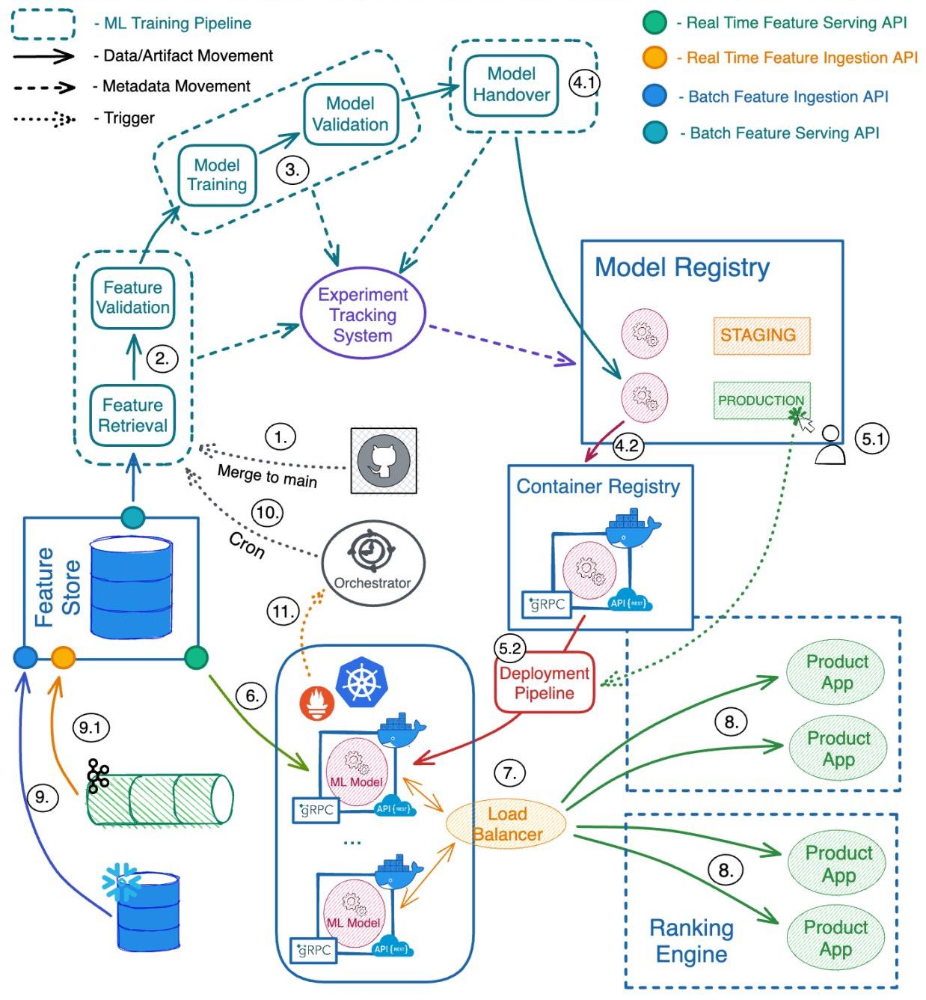

Dynamic Pricing
Introduction
When people think of Data Science, most of the thought goes to building machine learning models. Though this constitutes a large part of the work, this is often less than half of what is required to deliver a project. Going from a trained model to something running consistently in a production environment, with the relevant monitoring and error handling, can take much longer than building the model itself. This is why in the last few years we have seen the emergence roles such as Machine Learning Engineer and ML Ops Engineer.
Unfortunately, many businesses (especially startups) do not have the funding to build a large team of professionals, and it often falls to the data scientist to put their own models into production. After doing this (rather painstakingly) a number of times myself, I developed a project which covers most of the productionisation steps and significantly reduces the time to production for data science projects.
Objective
The goal of the project was to streamline the model productionisation process, enabling data scientists to deploy models without assistance of infrastructure specialists. This not only cuts down the time to production for experienced data scientists, but also allows less experienced data scientists to deploy models, which frees up the time of the more experienced ones. In addition to this, all deployed infrastructure will be in a uniform format, where the knowledge from understanding the deployment of one project will be transferable to all projects.
Methodology
The first step in building such a platform is to map out everything that is needed in the deployment of a project, split these requirements into components, and build these components in a way that makes them reusable for other projects. If we turn these steps into a diagram, you get something like the one below:
When using cloud platforms such as AWS there are often many different ways to create these steps. For the traditional machine learning parts (gathering data, generating features, training a model etc) we can look to AWS Sagemaker, which is AWS's flagship machine learning product. For each step, we create a script which takes inputs from S3, processes them and sends the outputs back to S3. These 'stages' are then hosted on ephemeral instances within the AWS infrastructure. Since each stage is structured the same, and can be generated from a terminal using the AWS CLI, it is possible to create boilerplate code which will generate the infrastructure for a user, the only thing they need to supply is the scripts and the S3 bucket locations.
When it comes to the hosting and deploying of trained models, the process is even simpler. Whenever possible, I like to generate infrastructure using scripts (Using Infrastructure as Code tools such as AWS Cloudformation). In doing this, we can save the project code, and any code for generating the infrastructure, inside the same project. This makes everything easy to find, and makes it very easy to make changes to the infrastructure (adding a new IP to a whitelist requires pushing a change on a GitHub project rather than opening a ticket with your account administrator). To simplify this process even further, tools such as AWS SAM can generate boilerplate code for commonly used infrastructure with a single command. If we wanted to host a model via an API, AWS SAM has a template that will generate a docker image from the project, store that image in AWS ECR (AWS's container registry), generate a lambda function which will handle requests to and from the docker image, and set up an API on AWS API Gateway, which communicates with the lambda function.
Experiment tracking is another important feature of good data science projects. Every change made to a model or system should be logged, and performance metrics should also be tracked over time in order to measure changes to the system in response to those changes. Tools such as MLFlow can be hosted on Amazon's EC2, and can save experiment and metrics for every Data Science project.
Following the steps above allowed us to build a robust Data Science productionisation platform without the help of dedicated specialists, and has been crucial in minimising error in Data Science projects, which can often have huge consequences when things go wrong.